Weitere Datenübertragung Ihres Webseitenbesuchs an Google durch ein Opt-Out-Cookie stoppen - Klick!
Stop transferring your visit data to Google by a Opt-Out-Cookie - click!: Stop Google Analytics
Cookie Info. Datenschutzerklärung

 Altbau und Denkmalpflege Informationen - Startseite / Impressum
Altbau und Denkmalpflege Informationen - Startseite / Impressum
Inhaltsverzeichnis - Sitemap - über 1.500 Druckseiten unabhängige Bauinformationen +++
Fragen/Bauberatung Altbausanierung/Hauskaufberatung Altbau/Fachwerkhaus?
Die härtesten Bücher gegen den Klimabetrug - Kurz + deftig rezensiert +++
Bau- und Fachwerkbücher - Knapp + kritisch rezensiert
Altbauten kostengünstig sanieren:
Heiße Tipps gegen Sanierpfusch im bestimmt frechsten Baubuch aller Zeiten (PDF eBook + Druckversion)
Was moderne Bauweisen für unerfahrene Bauherren bedeuten können +++
Fertighaus - Fluch oder Segen?
Das Handwerkerquiz + Das Planerquiz für schlaue Bauherrn

 Altbautaugliche Verfahren und Baustoffe
Altbautaugliche Verfahren und Baustoffe
Fachwerkrestaurierung, Hausschwammbefall und Hausschwammsanierung [19.1]
Die Kapitel 9-10 wurden in folgende Unterkapitel aufgeteilt - 9. Natursteinrestaurierung: [1]
[2] [3] [4] [5]
[6]
Steinboden: [7]
Reinigungstechnik: [8]
10. Wandbildner im Vergleich: [9] [10] [11] [12] [13] [14] [15]
10.a Fachwerk/Blockbau: [16 - Die schärfsten Tipps zur Fachwerkrestaurierung: Woran erkennst Du einen Fachwerk-Experten?]
[17] [18] [19.1 - Hausschwammbefall in Holzkonstruktionen des Altbaus] [19.2]
Bodenaufbau/Holzboden: [20]
Der echte Hausschwamm im Dielen-Holzboden/Balken/Schwellen/Deckenbalken/Balkenlage des Altbaues/Fachwerks/Fachwerkhauses
Der Hausschwamm bietet in vielen Altbausanierungen gegenüber dem Holzbock/Hausbock/Holzwurm und Nagekäfer fast unendliches
Glück für die beteiligten Profis, seien es Architekten, Ingenieure oder Handwerker wie Zimmerer und Maurer, seien es
Firmenvertreter der Holzschutzhersteller oder deren Multiplikatoren und Pharmareferenten namens Holzschutzsachverständige.
Kaum etwas ist von mehr Mythen, Märchen, Schwindeleien, Betrug und Lügen verdeckt, als der Befall und die
Beseitigung des echten Hausschwamms, mit kaum etwas - vielleicht die "Aufsteigende Feuchte", die
"Wärmedämmung" und der Fensteraustausch" ausgenommen, kann man bei der
Altbausanierung mehr und leichter Geld verdienen, das der arme Bauherr oft genug gar nicht hat.
Und warum?
Weil sich fast alle Profis darauf spezialisiert haben, die einschlägigen - von der Holzschutzmittelindustrie und ihren staatlichen Partnern und Mietlingen
erlassenen! - DIN-Normen, VDI-Richtlinien, Regelwerke,
Bau-Vorschriften, Meldepflichten, Zertifizierungen, Zulassungen usw. selbst bei sonst eingeschränkter Hirnhelligkeit geradezu gebetsmühlenhaft auswendig
herunterzubeten. Wobei sie sich nicht nur auf die tatsächlich gegebenen Fähigkeiten des Hausschwamms stürzen, sich von Holz zerstörend zu ernähren und dabei
auch das trockene Holz nicht zu verschmähen, sondern es bei einem Wasserbrünnlein in der Nähe auch fertigbringt, sich von
dorther über seine bis ca. 1 cm starken fadenförmigen "Wurzeln"/Hyphen (fadenförmige Pilzstränge in einem Mycel -
das Pilzgeflecht aus Pilzfäden) - als "Myzelstränge"/"Mycelstränge" mit Wasser zu versorgen. Nein, die
Hausbesitzerpanik wird dadurch ausgelöst, daß dem Hausschwamm Fähigkeiten unterstellt werden, die er so gar nicht hat. Beispielsweise
alles und jedes Holz hier und da rundum zerstörerisch zu befallen. Und seine bösen Sporen außerdem in der ganzen Gegend
herumsport, um auch jedes Fitzelchen Holz zu finden. Was aber beides so nicht stimmt. Denn das Holz muß als Nahrungsmittel für
den Hausschwamm zunächst mal die ausreichende Feuchte mit allerlei eben nicht überall vorhandenen Nebenbedingungen und Umgebungskonditionen haben, damit
dieser dann doch sehr wählerische Zeitgenosse da überhaupt reinbeißt und anwächst. Und diese im Holz selbst und seiner Ungebung unabdingbaren Randbedingungen
sind eben hinreichend selten. Wobei der Hausschwamm seine Sporen so gut wie überall hat und auf der Suche nach Freßbarem
herumdüst. Nicht nur in die Nähe irgendwelcher Fruchtkörper oder Myzelstränge. Sondern eben ubiquent,
allgegenwärtig hier und da und dort. Wenn nun seine Sporen, die also sowieso überall auf der ganzen Welt vorhanden sind, ein
feines, leckeres Holzplätzchen finden, bei denen alles - wirklich ALLES! - stimmt, dann, und nur dann schlägt er zu. Und nur
da. So daß der Bauherr folglich nicht! sein ganzes Haus abreißen muß oder ersatzweise mit dem so guten
Rat gebenden Holzschutzwüstling verwüsten und vergiften. Doch weiß das der Hausherr? Nein! Und warum wird ihm das dumme Zeugs dann immer erzählt?
Weil es dem Bauprofi eben wie ein Geschenk des gütigen Vaters aus dem Himmel vorkommt, wenn er endlich, endlich mal auf einen
Hausschwamm trifft. Weil er eben damit den wehrlosen, verängstigten, geschockten, verzweifelten Bauherrn in die ultimative
Panikattacke hineintreiben kann, um ihn gewissenlos auszunehmen wie eine gefangene und betäubte und wehrlose Weihnachtsgans. Das
betrifft beileibe nicht nur den privaten Hausbesitzer! Nein, noch wesentlich doller geht es dabei dem "Öffentlichen Auftraggeber",
dem Rathaus, dem Staatsbauamt, der Kirche an den Kragen, bei dem die Abwehrkräfte gegen die Bauwüstlinge nicht so gesund ausgeprägt
sind, wei bei einem vernunftbegabten Hausbesitzer. Denn dort sitzen noch wesentlich unkritischere und deswegen wehrlosere, da ausreichend
unkundige und ausschließlich fremdes Geld veraasende Bauherren-Vertreter namens hin und wieder sogar korrupte Baubeamte, die vor
wirklich keiner unwirtschaftlichen, geschweige denn überzogenen oder gar unsinnigen Baumaßnahme zurückschrecken. Die nie wirklich abreißende Kette von
aufgedeckten - und das ist nur die Spitze des Eisberges - Baukorruptionsskandalen in den öffenlichen Bauverwaltungen des Staates und der Kirchen sprechen da
eine mehr als deutliche Sprache von all den eckelhaften Böcken, die sich da als treusorgende Gärtner in den weichen Amtssesseln verbarrikadiert haben und
ihre, nicht unsere Blümlein fleißlig gießen und das ihnen falscherweise anvertraute und uns aus der Rippe geschnittene Geld
verschwenden und vergeigen und vergeuden. Und alle - ja, auch wir! - helfen dabei mit! Die Vergeudung zeigt sich an vielen Details.
Sei es nun die "energetische Sanierung" mittels Wärmedämmung, die sich niemals
wirtschaftlich rechnet (was jeder weiß!) und für die Fassadendämmung noch nicht einmal stichhaltige Nachweise des Energiesparens, sondern nur für das
Energiemehrverbrauchen vorlegen kann, Einsatz von "alternativen" Energien, die sich nur dank
Zwangsabzocke auf Kosten und zu Lasten der Armen rechnen (was auch jeder weiß), sei es Horizontalisolierung
gegen niemals aufsteigende Feuchte (was kaum einer weiß) oder eben vollkommen übertriebenes Herausreißen von alter
Bausubstanz wegen ein bisserl Befall mit irgendwelchen Holzschädlingen, meinetwegen auch Hausschwamm anstelle Normalsanierung und
dann richtige Lüftung und vor allem Temperierung/Heizung.
Tut mir gerade als biederer Steuerzahler außerordentlich leid, daß das so ist, aber das ist an wirklich unzähligen
Fällen, die nicht nur die Rechnungshofprüfung und der Bund der Steuerzahler bemängeln, zu belegen.
Hier mal eine Leserbriefaktion zum Thema, die ein Bericht im Obermain-Tagblatt am 2. August 2017 auslöste. Dort war zu lesen:
"Echter Hausschwamm im Gebälk - Schreckensnachricht für die Veitskapelle auf dem Ansberg - Hohe Kosten befürchtet ... der vermeintliche einfache Wasserschaden
im Gebälk ... war keiner. Die Hiobsbotschaft: Der echte Hausschwamm hatte schon mächtig gewütet. Diagnose: akuter Handlungsbedarf. ... ihn zu bekämpfen, wird
im Normalfall richtig teuer. ... nach ersten, vorsichtigen Schätzungen 35000-40000 Euro ... Zimmerermeister (erklärt) wenn man nicht bald handelt, wird er sich
immer weiter ausbreiten. Dann werden die Schäden immer schlimmer." Der echte Hausschwamm ist hartnäckig. Es genügt nicht, schadhafte Balken zu ersetzen, denn er
frisst sich zwischen Mauerwerk und Putz. "Mindestens ein Meter mehr Rücksprung bei Befall" lautet die Maßgabe für die Zimmerer. ... Balken grosszügig
ausgeschnitten ... (Der Zimmerermeister:) "Außerdem muss eine Fachfirma das Mauerwerk tränken. Da wird die Chemiekeule ausgepackt"."
Diese Grausamkeiten lösten mein tiefempfundenes Mitleid mit der Kirchengemeinde und dem ahnungslosen Diözesanbauamt Bauamt aus, die derlei Wüten finanziell
wie immer unterstützen ("Gottlob zieht der Domberg mit" steht dazu im oben genannten Zeitungsbericht). Am gleichen Tag reichte ich den folgenden
Leserbrief ein, der gleich am Folgetag, dem 3. August 2017 erschien:
"Nicht so dramatisch
Die Hiobsbotschaft vom Hausschwamm im Gebälk der Veitskapelle sollte die sanierungsgebeutelte Kirchengemeinde lieber nicht zum Veitstanz auffordern. Alter und
abgestorbener Hausschwammbefall in Trockenstarre, die typische Folge einst undichter Dachdeckung, ist nämlich nicht so dramatisch, wie es dem Zeitungsbericht
zu entnehmen ist.
Ein bisschen Pilzkunde hilft da weiter: Ist die relative Luftfeuchtigkeit im betroffenen Bereich nahezu gesättigt, und hat das Holz mindestens 30 Prozent
Holzfeuchtigkeit? Wenn nicht, ist Sporenkeimung und damit weiterer Befall auf bisher unbefallenem Holz ausgeschlossen. Und ein Pilzfädengeflecht, das „Myzel“,
kann nur weiterwachsen, wenn die Holzfeuchtigkeit über 20 und die Luftfeuchtigkeit über 82 Prozent beträgt sowie keine Luftbewegung im gefährdeten Bereich
vorliegt. Das Myzel stirbt nämlich schon nach zehn Minuten ab, wenn es einem Luftzug ausgesetzt wurde. Die Hausschwammstränge selbst können überhaupt nicht
weiterwachsen, es muss immer erst ein neues Myzel entstehen, was die genannten Umgebungsbedingungen erfordert. Auch ein Fruchtkörper kann sich nur aus einem
Myzel entwickeln. Wenn man etwas von der Lebensweise dieses Pilzes versteht, entfallen sofort alle unsinnigen und seit langem in Fachkreisen abgelehnten
übertriebenen Bekämpfungsmaßnahmen nach Norm wie Rückschnitt, Gifteinsatz und durchfeuchtende (!) Mauerwerkstränkung. Diese zerstören sinnlos, treiben die
Kosten zum Himmel und verwandeln das Bauwerk in eine Sondermülldeponie auf Kosten der Gesundheit. Ein umsichtiger und verantwortungsvoller Bauherr darf mit
gutem Gewissen darauf verzichten.
Konrad Fischer,
Architekt,
Hochstadt am Main"
Ob sich nun die Gemüter beruhigen und nur die sinnvollen Maßnahmen kostengünstig ergriffen werden? Nie im Leben, denke ich mal, denn bei so vielen dollen
Fachleuten im Spiel gäbe es so viele Gesichter zu verlieren, da heißt es sich verbünden und dem Überbringer der Guten Nachricht das Genick zu brechen. Oder?
Einige weitere 2011er Beispiele zu typischen Hausschwamm-Katastrophen und Sanier-Exzessen - Der überraschender Befall mit dem echten
Hausschwamm Serpula Lacrymans und die typischen Schreckreaktionen:
Turnhalle Großolbersdorf - Mehrkosten durch überraschenden Hausschwamm-Befall im Gebälk - Unwirtschaftliche Fassadendämmung
Sanierung Kirche Woltersdorf - Überraschung! Hausbock und Trotzkopf (befällt nur pilzbefallenes Holz!) im Gebälk
Varmissen Evangelische Kapelle: Schließung nach Pilzbefall mit Echtem Hausschwamm - zwei Jahre soll getrocknet werden!
Wörrstadt Neubornschule: Bauabriß wegen Hausschwammbefall - Ökoabzocke mit PV-Anlage - Energetische Sanierung unwirtschaftlich?
Halbe Dorfkirche: Hausschwamm macht sich breit - Geld für Sanierung fehlt
Wendhausen Holländer-Mühle: Schleimpilz und Hausschwamm wollen für rund 100.000 EUR saniert werden!
Greifswald Caspar-David-Friedrich-Zentrum: Unerwarteter Hausschwammbefall sorgte für Mehrkosten und Terminverzögerung
Rötha Jugendstilhaus in Bahnhofstraße: Bauverzögerung und Mehrkosten: Hausschwamm in Deckenbalken, Holzschutzfachmanns Gutachten begründet Zerstörung, Austausch/Erneuerung alle Holzdecken -
Waldshut-Tiengen Kirche: Vollkommen überzogener Bauschwachsinn gegen Hausschwamm & Holzwurm - chemikalische Bohrlochinjektion im Kirchensockel als "horizontale Wassersperre" gegen unmöglich vorhandene aufsteigende Feuchte
Schloß Dieskau: Hausschwamm-Bekämpfung mit großem Aufwand
Prämonstratenser-Kloster Roggenburg: Bekämpfung Feuchte und Hausschwamm führt zu unerwarteten Mehrkosten
Hörbering Pfarrkirche St. Jakobus: Putz wegen Hausschwammbekämpfung abgeschlagen
Marsow Kirche: Hausschwamm nagt restaurierte Kirchenbänke an: Schreckhaftes Verbrennen derselben vernichtet sinnlos Sanierungsinvestition
Marsow Kirche: Hausschwammbekämpfung extrem und teuer kennt kein Maß und Ziel: Naßchemische Vergiftung der Bausubstanz muß lange austrocknen
Kaufungen Söhre Stiftskirche: Überraschungs-Maßnahmen mit Chemo-Vergiftung und Thermo-Verfahren gegen Pilzbefall / Hausschwamm - Sanierungskosten explodieren
Königshütte Evangelische Kirche - Sanierung ohne ausreichende Voruntersuchung - Hausschwamm-Überraschung kurz vor Sanierungsabschluß erzwingt Baustopp
Holzschädlinge,bauschädigende Experten und richtige Holzfreunde endlich mal unter sich - Hausschwamm an Dielung im Fachwerkforum
Und so weiter und so fort, Googlen genügt ...
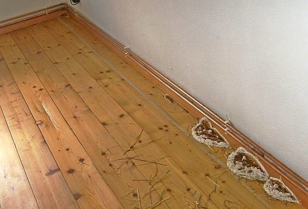
Der echte Hausschwamm 01: Fruchtkörper auf den Holzdielen und der Sockelleiste des Fußbodens - wie Zinnsoldaten aneinandergereiht (Quelle: Bauberatung)

Der echte Hausschwamm 02: Die drei zusammenhängenden benachbarten Fruchtkörper auf dem Holzfußboden im Erdgeschoß (Quelle: Bauberatung)
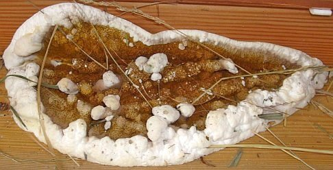
Der echte Hausschwamm 03: Ein Fruchtkörper auf den Holzdielen mit weiß-wattigem Zuwachs-Rand und rostroter oranger Mitte: Die Sporen (Quelle: Bauberatung)
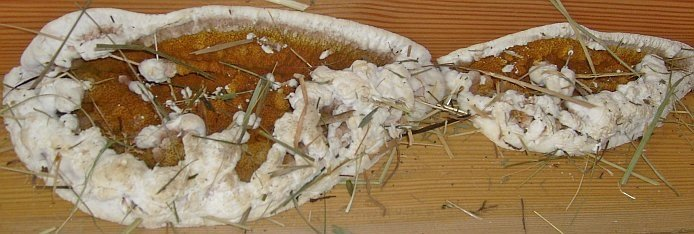
Der echte Hausschwamm 04: Zwei zusammengewachsene Fruchtkörper auf Dielen (Quelle: Bauberatung)
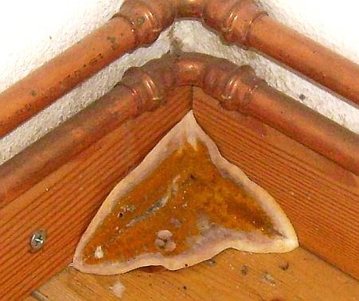
Der echte Hausschwamm 05: Wie geschickt! Der rostrote Fruchtkörper mit weißem Zuwachsrand wächst ins Eck an drei Flächen: Holzdielenboden und Fußbodenleisten (Quelle: Bauberatung)
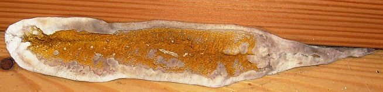
Der echte Hausschwamm 06: Länglicher Fruchtkörper zwischen Fußleiste und Holzboden (Quelle: Bauberatung)

Der echte Hausschwamm 07: Holzfeuchtemessung auf den den Fruchtkörpern benachbarten Boden-Dielen: 36 Prozent - ideal, das genügt dicke für prima Wachstum! (Quelle: Bauberatung)
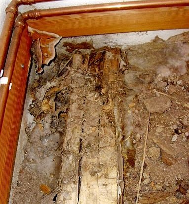
Der echte Hausschwamm 08: Freigelegte Balkenlager / Bodenbalken / Lagerhölzer: In Ecke verrottet mit Würfelbruch, wattartiges
Myzel/Mycel in Fußbodenschüttung (Quelle: Bauberatung)
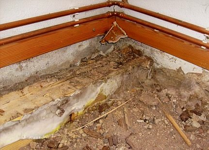
Der echte Hausschwamm 09: Schwefelgelbe Bereiche der Lufthyphen als weißlicher Myzelwatte /Mycelwatte an Lagerbalken und Schüttung (Quelle: Bauberatung)
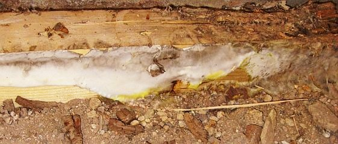
Der echte Hausschwamm 10: Myzel-Watte/Luftmycel im Detail: Weiß und Gelb wie Schwefel an Lagerbalken und Schüttung (Quelle: Bauberatung)
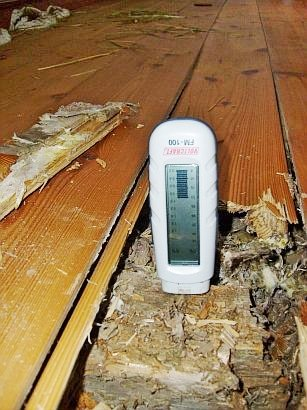
Der echte Hausschwamm 11: Widerstandsmessung-Feuchtemessung in Lagerholz mit Würfelbruch: 20 Prozent - auch nicht schlecht! (Quelle:
Bauberatung)
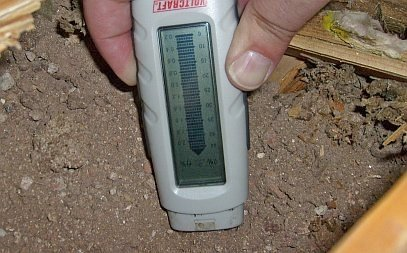
Der echte Hausschwamm 12: Elektrische Messung mit Widerstandsmeßgerät Feuchte und Salzbelastung in Fußbodenschüttung:
Feucht und belastet mit bauschädlichen Salzen, Nitraten / Mauersalpeter (Quelle: Bauberatung)
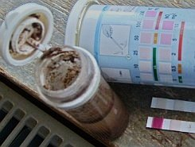
Der echte Hausschwamm 13: Hohe Salpeterbelastung - Mauersalpeter/Nitratsalz - Messung Nitratgehalt in der myzeldurchwachsenen Fußbodenschüttung:
extrem (Quelle: Bauberatung)
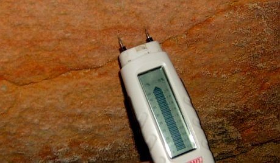
Der echte Hausschwamm 14: Sandstein-Giebelwand - Fundamentbereich aus Sandsteinquader-Kellerwand: Extrem naß (Quelle: Bauberatung)
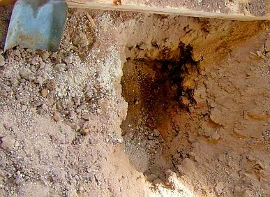
Der echte Hausschwamm 15: Des Rätsels Lösung: Aushub der mit Myzelsträngen durchwachsenen Bodenschüttung im nicht
unterkellerten Bereich unter dem Hausschwammbefall: Sohle stark durchfeuchtet und von oben nicht zu sehen - Die Feuchtequelle für
den Pilzbefall (Quelle: Bauberatung)
Auch dieser sehenswerte, bemerkenswerte und hübsche Hausschwammbefall in einem frisch sanierten Bauernhaus sorgte zunächst für
Verzweiflung. Wohlfeile Ratschläge einschlägiger Bau-Fachleute und Holzschutz-Experten reichten vom Ausziehen und Abreißen des
Hauses bis zum Vollvergiften und Tränken der Bausubstanz im engeren und weiteren Umfeld und Bereich des Hausschwammmbefalls mit den
üblichen Gift-Holzschutzmitteln der Holzschutzchemie, toxische Voll-Tränkung des Mauerwerks mit Bekämfungsmittel inklusive.
Woher denn der Hausschwamm-Pilz-Befall wirklich kam, wie die bautechnischen Randbedingungen des Befalls aussahen, woher vor allem die
für den Hausschwammbefall unabdingbare Riesenfeuchte gespeist wurde, hat von den Sanierexperten niemanden interessiert. Eben toll,
wenn man immer gleich bescheidweiß, wenn man einen Hausschwamm-Fruchtkörper sieht und seine champignon-pilzig-wohlriechenden
Hausschwamm-Sporen und Hausschwamm-Myzele riecht, das zeichnet manche Hausschwamm-Sanier-Profis gem. DIN 68 800, Teil 4 oder auch
des Deutschen Holz- und Bautenschutzverbandes (DHBV) eben aus. Bestimmt nicht immer, aber, aber? Und vielleicht auch sein der im DIN e.V.
und seinen Vereins-Ausschüssen bzw. sonstwo herumsitzende Bauchemie-Industrie von eigenen Gnaden entwachsenes
DIN-Norm-WTA-Regelwerk-Bauvorschrift-Sanierkonzept ohne Gnade, Kenntnis, Sinn und Verstand. Gift drauf, und Ruh ist. Dabei gäbe es
Fall der Fälle durchaus giftfreie Holzschutz-Alternativen neben dem konstruktiven Holzschutz, der eben die
Lebensbedingungen der Holzschädlinge kennt und als Planungsvorgabe für die Konstruktion und Haustechnik respektiert.
Wie die Randbedingungendes Befalls mit Holzschädlingen respektive Pilz und Hausschwamm aus baubiologischer, biologischer,
physikalischer und technischer Sicht wirklich sind, welche Maßnahmen zur Bekämpfung und zukünftig sicheren Vermeidung des
Befalls sich daraus - und nur daraus - zwangsläufig ergeben - schietegal für all diese Von-vornherein-Besserwisser mit
normgeschwellter Brust. Weg, weg mit diesen!
Zum Schluß kam dann endlich nach sorgfältiger und vorurteilsfreier Suche heraus, daß der Dielen-Holzboden auf
Lagerhölzern/Holzschwellbalken und einer mächtigen myzeldurchwachsener Schüttung aus nitratverseuchtem (hygroskopisch
feuchtesaugender Mauersalpeter!) Abbruchmaterial des abgebrannten Vorgängerbaus besteht und auf einem etwa 50 cm tiefer gelegenen
alten Ziegelboden / Backsteinboden auf Lehmschlag liegt und sich der Hausschwamm seine Nässe von dort ganz unten heraufgezogen hat.
So daß man die Feuchtequelle eben nicht oben sehen, sondern nur vermuten konnte. Ein ursprünglich offenliegender Bachlauf, der
das Hangwasser einst in der engen Reihe zum Nachbarhaus wegspülte, und nun bei jedem besseren Regen den Kellerraum im nur
halbunterkellerten Kellergeschoß bis zum Pumpensumpf durchrieselte, kam neben den Betonplatten vor dem mit Geflälle zum Haus
auch noch dazu.
Simpel-Sanierung: Feuchtequelle mit einfachsten baulichen Mitteln abgestellt, nur betroffene morsche Holzteile ausgetauscht, Rest
wiederverwendet. Minikosten, und das Meiste in Eigenleistung. Hypernervöse Vergiftungs-Holzschutzsachverständige, umsatzgeile
Bauwirtschaft, Bauhandwerker und Bauchemie in die berühmte Norm-Röhre, Durchmesser mindestens 1 Meter, gucken lassen. Das ist
ja wohl selbstverständlich bei ausschließlich kundenorientierter Beratung, wie es sich eben eigentlich immer gehört. Auch
gegenüber von Geldscheißern und sich bis Unendliche streckenden (Kirchen-)Steuerzahler-Eseln geplagten und verführten
öffentlichen/kirchlichen Bauherren, oddä? Ein Mikroskop für die Suche danach? Bitteschön:
Aus der Fachwerktraum
Nochwas zur Abschreckung (aus einem meiner Gutachten) für Erwerbswillige, die einfach so auf Expertenzuruf ein schönes
Fachwerkhaus kaufen wollen, ohne vorher eine solide Kaufberatung zu Rate zu ziehen. Und ein unentgeltliche Einblick in die Psychologie
und Philosophie des deutschen Immobilienwesens und der Sanier-Branche:
(Ort), ehem. ...haus, Objektbesichtigung am (Datum)
Kurzgutachten zu Schadensumfang und Sanierungsaufwand
Anlage: CD mit Baufotos vom Ortstermin
1. Teilnehmer Ortsbesichtigung
1.1 Bauherrschaft: (Name Auftraggeber)
1.2 Vertreter des Objektverkäufers und Firmenvermittler: (Name)
1.3 Architekt: Dipl.-Ing. Konrad Fischer
2. Anlaß des Termins
Der Termin fand statt, um nach einer Baubegehung den Bauschadensbefund und den damit sowie mit der künftigen Nutzung
verbundenen Sanierungsaufwand vorläufig einzuschätzen sowie daraus Hinweise für das weitere Vorgehen zu entwickeln.
3. Baubegehung
Das ehem. ...haus, ein stattlicher zweigeschossiger Fachwerkbau des 19.Jhs. mit Schieferdeckung, steht in Ortskernlage unweit der Kirche. Nach
den vorliegenden Plänen wurde es zuletzt im Erdgeschoß für ...zwecke, im Obergeschoß und teilausgebauten Dachgeschoß als
...wohnung mit Gästebereichen genutzt. Zum Objekt gehören eine Fertigteilgarage sowie Außenanlagen mit plattenbelegten Gehbereichen,
einer Freitreppe, front- und rückseitige Stützmauern sowie Rasenflächen.
Das derzeit ungenutzte und nicht möblierte Anwesen wurde komplett außen und innen in allen Geschossen begangen. Dabei wurden die wesentlichen
Baubereiche und sichtbaren Bauschäden besichtigt, technisch erläutert und fotografisch dokumentiert (vgl. Fotodoku in beiliegender CD, Destruktionsstruktur
Holzbauteile durch holzzerstörender Schädlinge - echter Hausschwamm und Trotzkopf - digital
überarbeitet zur Verdeutlichung). Der derzeit vorhandene Ausbaustandard entspricht in wesentlichen Bereichen den 60er Jahren des letzten Jahrhunderts, die
Heizzentrale ist jüngeren Datums.
Bauunterlagen zur detaillierten Einschätzung der früheren Bauvorgänge und geplanten Modernisierungsmaßnahmen liegen derzeit nicht vor.
4. Bauschadensbefund
4.1 Tragende Baukonstruktion
4.1.1 Bauwerk
Die Fachwerkkonstruktion hat sich durch erhebliche Holzschädigungen der fassadenseitigen Auflagerbereiche in allen Bereichen - Fassade, Innenwände
und Decken - verformt. Die sichtbaren Holzschäden, Nässespuren, Bauteilverformungen, Ausgleichkonstruktionen im Umfeld maßhaltiger
Bauteile wie Fenster, die Gebäuderisse an Wänden und Decken und die innenseitig ablesbaren Tapetenaufwerfungen lassen mit hoher Wahrscheinlichkeit
den Schluß zu, daß auch die derzeit nicht freiliegende Fachwerkfassade unter den Verschieferungen erhebliche Schäden zumindest in den Auflagerbereichen
und im Umfeld undichter Fensteranschlüsse sowie Wasserleitungsstrecken aufweisen wird.
Hinzu kommen Feuchteschäden an Innenwänden durch Wasserleitungsleckagen und in den oberen Konstruktionszonen durch
undichte Dachdeckung mit erheblichem Wassereintrag in Wände und Decken. Da es am Besichtigungstag regnete, konnten aktuell
vorhandene Deckschäden und ihre nachteilige Auswirkung an der schieferbekleideten Nordfassade exemplarisch besichtigt werden.
Die exemplarische Untersuchung einiger Schadensbereiche an der Fassade ergab, daß durch schadensfördernde, konstruktiv
ungeeignete Reparaturmethoden ältere Fehlstellen und Schadensbereiche des Fachwerks nur oberflächlich mit Pech und Anstrichen
überdeckt, mit Verkittung und Zement-Vermörtelung verfüllt bzw. durch aufgesetzte Bretter kaschiert wurden.
Die dort angetroffenen und in Teilbereichen offenbar bei zurückliegenden Bauuntersuchungen schon freigelegten Bauschäden sind durch dauerhafte
Durchnässung der betroffenen Konstruktionsbereiche verursacht, verstärkt durch trocknungsblockierende Oberflächenbeschichtungen.
Erhebliche Bereiche der geschädigten Hölzer weisen typische kreisrunde Fluglöcher des Trotzkopfs auf - ein holzzerstörender
Käfer, der durch Naßfäulepilze vorgeschädigtes Konstruktionsholz befällt. Auch das den angemorschten Auflagerbereichen der Fachwerkstützen
an der Ostfassade entnommene Holzmehl mit Resten des Spätholzschichten bestätigt als typisches Fraßbild das Vorliegen des Trotzkopfs
und indirekt den damit zwangsläufig verbundenen gravierenden Schädlingsbefall mit Naßfäulepilz.
Im Erdgeschoß führten mehrere Wasserschäden zu Fleckenbildung mit Putz- und Anstrichzerstörung an den Wänden, die ihre Ursache überwiegend in
Wasserrohrbrüchen bzw. sonstig undichten Rohrleitungen / Leckagen haben dürften. Teilweise kann auch Kondensateinlagerung aus feuchter Luft in unterkühlte
Bauteile mangelhaft geheizter Räume eine zusätzliche Bauteildurchfeuchtung bewirkt haben. Im Obergeschoß verweisen Deckendurchfeuchtungen auf dachseits
eingedrungenes Regenwasser.
Im WC belegt der würfelbruchartige Zerfall der nur noch in Resten anzutreffenden Türbekleidung Befall mit echtem Hausschwamm, der seinen Feuchtebedarf
offensichtlich aus dem ausreichend durch direkte Beregnung, Spritzwasser und undichten Dachrinnen stark durchfeuchteten Sockelbereich / Sockelmauerwerk
versorgte. Da auch die Befallsbereiche an der Fassade würfelbruchartige Schadensbilder aufweisen, liegt der Schluß nahe, daß dort ebenfalls Hausschwammbefall
vorliegt. Über das Schädlingsvorkommen im Detail, die einzeln bzw. vergesellschaftet auftretenden Schädlingsarten, deren Aktivitätsstatus und den weitreichend
anzunehmenden Gesamtumfang des tatsächlichen Befalls im gesamten Bauwerk kann nur eine weiterführende, derzeit nicht erforderliche Bestandsuntersuchung und
holztechnische Begutachtung nach entsprechender Konstruktionsfreilegung weiteren Aufschluß geben.
Im Umfeld der befallsbedingt verformten Fachwerkhölzer sind auch die Gefache der Wände und Decken entsprechend
geschädigt. Anzunehmen sind auch weitergehende Schäden der Verbindungselemente des Fachwerks wie überlastungsbedingte
Brüche, Risse und Vermorschungen im Inneren des Gefüges. Auch hier kann nur eine Konstruktionsfreilegung weitergehende Klarheit
verschaffen, die aus gegebenem Anlaß nicht nur punktuell, sondern im Hinblick auf ausreichende Planungssicherheit großräumig erfolgen muß.
4.1.2 Außenanlagen
Die Stützmauern sind durch Auffrostung der Fugen in ihrer Standsicherheit erheblich gefährdet. Auch die Freitreppenkonstruktion
ist erheblich frostgeschädigt.
4.2 Raumschalen und sonstige Bauteile
Die Oberflächen aller Räume und Ausbauteile - Böden, Decken, Wände, Verkleidungen, Fenster und Türen - sind weitestgehend durch Nutzung und Alterung
verschlissen, z.T. durch Feuchteschäden konstruktiv und gestalterisch erheblich beeinträchtigt und in den Hauptschadensbereichen bis in den Untergrund
zerstört. Auch hier wird sich der Schadensumfang im Detail erst nach Freilegung der o.g. Konstruktionsschäden erfassen lassen.
Die Fensterkonstruktionen sind in vielen Bereichen durch Feuchteaufnahme und Anstrichvernachlässigung verzogen, auch einige
Türen sind feuchtebedingt aufgequollen und schwergängig.
4.3 Haustechnik
Die veraltete und im Bereich Wasser und Heizung geradezu primitiv verlegte
Haustechnik ist insgesamt aus Sicht einer modernen Nutzung erneuerungsbedürftig.
5. Sanierungsaufwand
Bei der Voreinschätzung des erforderlichen Sanierungsaufwandes sind zu berücksichtigen:
- Hoher Schädigungsgrad der langfristig vernachlässigten, nur mit handwerklich primitiver "Pinselsanierung" und oft
schadensfördernd "instandgehaltenen" Bausubstanz
- Offener und verdeckter konstruktionsgefährdender Befall von tragenden und nichttragenden Hölzern mit tierischen und pflanzlichen
Holzschädlingen (echter Hausschwamm!), erhöhter Freilegungsbedarf der Baukonstruktion
außen und innen zur Gewährleistung des Sanierungserfolgs
- Insgesamt veralteter und unbrauchbarer Standard der Haustechnik, erhöhter Erneuerungsbedarf
- Hoher Umbau- und Modernisierungsbedarf für künftige Eigen- und Fremdnutzung nach zumindest mittlerem Standard
- Bestandsverträgliche Baustoff- und Konstruktionswahl für Sanierung im Gegensatz zu üblichen
bauschädlichen "Neubaulösungen" nach Industrienorm und substanzzerstörender "Bauphysik"
Dieses sich jedem Baufachmann bei verständiger Beurteilung ohne weiteres erschließende Anforderungsprofil erfordert aus technisch und wirtschaftlich
unabweisbaren Gründen einen Kostenansatz je qm Nutzfläche für die technische Bestandsaufnahme, Planung und Baudurchführung, der weit über eine geringfügige
"Pinselsanierung" hinausgeht.
Aus der ständigen Abrechnungserfahrung an inzwischen ca. 350 Altbauprojekten des ein bundesweit tätiges Architektur- und Ingenieurbüro führenden
Unterzeichners erscheint derzeit ein Quadratmeteransatz von brutto (inkl. MWST) ca. ... EUR mit Toleranz +/- 25 % als angemessen und
plausibel - vorbehaltlich neuer Erkenntnisse nach Freilegung der Hauptschadensbereiche und weiterer Planungskonkretisierung.
Auch die dem Unterzeichner vorliegenden Erkenntnisse aus der Seminarleitung für Altbauplanung bei Architekten- und Ingenieurkammern von Bayern bis
Schleswig-Holstein seit 1988 sowie als langjähriger Vorsitzender des Beirats für Denkmalerhaltung der Deutschen Burgenvereinigung e.V. bestätigen diese
Kalkulationsgröße als realistisch. Sie dürfte auch jedem Baufachmann unter Berücksichtigung des gegebenen Bauzustands nachvollziehbar sein.
Nach den vorliegenden Gebäudeunterlagen weist das Bauwerk eine Nutzfläche von ca. ... qm auf. Demnach errechnet sich der erforderliche
Sanierungsaufwand (Kostengruppen 1 -7 gem. DIN 276 exkl. Erwerbskosten) unter Berücksichtigung der obigen Einschränkungen und ohne
Außenanlagen und Garage wie folgt:
... qm x ... EUR/qm = 520.000 EUR
Nach der gemeinsam durchgeführten vorläufigen Wirtschaftlichkeitsberechnung unter Berücksichtigung ortsüblicher Mieten für mittleren Nutzungsstandard
ergibt sich ein möglicher Kreditbetrag aus beliehener Miete für das Gesamtobjekt zu ca. 50.000 bis 60.000 EUR. Damit ist die erforderliche Gesamtsanierung
nicht finanzierbar.
Die verkäuferseits in der Beratung angeführten Aussagen zum seinerseits erwarteten Sanierungsaufwand gem. vorliegenden Angeboten von erfahrenen
Handwerksbetrieben nach Ortseinsicht und eine angeblich vorliegende Gebäudewertermittlung um die 80.000 EUR erscheinen dem Unterzeichner fachtechnisch und
wirtschaftlich keinesfalls nachvollziehbar.
Da sich der schlechte Bauwerkszustand und der erhebliche Befall mit holzzerstörenden pflanzlichen und tierischen Schädlingen jedem Baufachmann ohne
weiteres erschließen, gewinnen diese Aussagen nach fachlicher Auffassung des Unterzeichners - insbesonders unter Berücksichtigung der verkäuferseits nach
eigenen Angaben vorliegenden großen Bauerfahrung und objektbezogenen Beiziehung fachlich erfahrenen Rates altbauqualifizierter Handwerksmeister - geradezu
absurden bzw. interessensgeleiteten Charakter zuungunsten der Auftraggeberin.
Fazit
Das besichtigte Bauwerk erfordert zur Nutzbarmachung nach zumindest mittlerem Standard ganz erhebliche Aufwendungen, die sich aus wirtschaftlicher Sicht
unter den gegebenen Umständen und vorgetragenen finanziellen Verhältnissen der Auftraggeberin keinesfalls rechtfertigen lassen.
Offenbare und sich aus dem offenbaren Bauzustand jedem Baufachmann erschließende verdeckte Mängel lassen den notwendigen Instandsetzungsaufwand auch zum
jetzigen Zeitpunkt von der Größenordnung her zutreffend einschätzen.
Die von Verkäuferseite über seinen sich gegenüber der arglosen Auftraggeberin als besonders erfahrenen Baufachmann gebenden Objektvermittler in der
Beratung und offenbar auch in den Verkaufsverhandlungen vorgetragene Schätzung des Gebäudewerts und Sanierbedarfs entbehren nach Auffassung und Erfahrung des
Unterzeichners jeglicher Realität. Die vorliegende kritische Befallssituation mit holzzerstörenden Pilzen und Insekten - das unter Baufachleuten allgemein
bekannte Hauptproblem im Fachwerkbau mit besonders hohem Sanieraufwand - blieb dabei wohl unberücksichtigt.
Nicht unbeachtet sollte dabei bleiben, daß ein Großteil der hausschwammbefallenen Teile der Türbekleidung zum Zeitpunkt der Baubegehung rückstandslos
entfernt waren, möglicherweise, um das Objekt in einen dem Laien bzw. Kaufinteressenten unverdächtigeren Zustand zu versetzen. Auf kritische Nachfragen des
Unterzeichners mußte die Verkäuferseite von einigen verharmlosenden Aussagen zum Sanierungsbedarf abrücken und den technischen Standpunkt des Unterzeichners
zu den Saniererfordernissen bestätigen.
Da die baulich notwendigen Aufwendungen die gegebenen Finanzierungsmöglichkeiten dramatisch übersteigen werden und nach der dem Unterzeichner
bekanntgewordenen Sachlage keine vertretbaren Mittelergänzungen aus Abschreibung, Förderung und Mietertrag zu prognostizieren sind, wird von einer
Weiterverfolgung des Bauvorhabens abgeraten.
Von der Beauftragung der verkäuferseits ebenfalls (!) zur Vermittlung angebotenen Baufirmen muß deshalb ebenfalls dringend abgeraten werden. Eine
kostensichere und wirtschaftlich vertretbare Bauvergabe setzt eine intensive Bauuntersuchung, Planung und das Ausschreibungs- und Wettbewerbssystem gem.
VOB/A zwingend voraus. Die freie Vergabe an "vermittelte" Baufirmen auf vorläufigem Erkenntnisstand kann unter den gegebenen Umständen
schlimmste Manipulationen und für den Bauherrn überraschende Kostenexplosionen durch raffiniertes Nachtragsverlangen nicht ausschließen.
Dem Unterzeichner zumindest erscheinen die verkäuferseits erkennbaren Interessenskollisionen zuungunsten des Erwerbswilligen nicht hinnehmbar. Die hier
zu erkennende systematische Überbeanspruchung der gegebenen finanziellen Möglichkeiten und Interessen des Erwerbswilligen durch einem vernünftigen
Geschäftsgebaren Hohn sprechenden "Vermittlungsangebote" und "Ratschläge" betreffend Objektkauf und Auftragsvergabe erfordern äußerste Vorsicht und objektive
Überprüfung.
Ob in Anbetracht der verkäuferseits herbeigeführten vollständigen technischen und wirtschaftlichen Fehleinschätzung seitens des Erwerbswilligen
der Objekterwerb rückgängig gemacht werden kann und sollte, bedarf juristischer Beurteilung des Kaufvertrags und der gegebenen Erwerbsumstände.
Hierzu ist aus Unterzeichnersicht dringend anzuraten.
Aufgestellt:
Dipl.-Ing. Konrad Fischer
Architekt BYAK
Traurig, nicht wahr? Soweit zum Problem Hauskaufberatung. Wie man nun die ganzen Schäden von der Fachwerkschwelle bis zum
letzten Fachwerkbalken und Gefach fachtechnisch einwandfrei saniert, ist eine Frage für sich. Eine Frage? Aber nein! Ein riesiger
Fragenkomplex, der für jeden Einzelfall neu zu entscheiden ist. Fachwerk total entfachen, skelettieren, entbeinen, entgräten?
So machen es viele Zimmerleute und empfehlen es viele Hozschutzsachverständige, Architekten und Planer. Ja mei, wenn das Geld sonst
verrottet, die Denkmalsubstanz der Raumschalen egal, der Denkmalpfleger dafür, von mir aus. Ich habe sowas jedenfalls noch nie
vorgefunden und deswegen immer die kleinteilige Reparatur Holz für Holz mit möglichst kleinen Gefach- und Balken-Freilegungen
bevorzugen müssen, können und dürfen. Hin und wieder mal ein Eisenteil als zurückhaltend dimensionierte Verstärkung für wo am nötigsten, mit raffinierten
Bohrschrauben oder Schraubbolzen, Dübeln oder
Laschkonstruktion kraftschlüssig mit dem Konstruktionsholz verbunden.
Klappt doch auch, ist wesentlich billiger als der Totalangriff auf die Substanz - da mögen die gelahrten Herren Zimmerleute von mir aus dagegenhalten, was sie
wollen, es stimmt doch immer. Wenn es geht auch ohne Zimmermannsnägel und Nagelbolzen und Verbindungswinkel Holz-in-Holz mit sogenannten zimmermannsmäßigen
Holz-Verbindungen:
Verklauung, Verzapfung, Verkämmung, Holznagel, Verleistung/Gratleisten, Holzdübel usw. Wie der Japaner eben. Oder der gute,
alte Zimmermeister früherer Zeiten. Der war doch auch kein Depp! Und hat seine Buden auch nie mit Dämmstoff so vollgemüllt,
wie heutige schwarzhutkrempenverschattete Cordhosenträger im einst edlen Holzbau-Gewerk. Eben zünftig! Und verboten sind auch
das Doublieren von Bohlen auf morsche, ausgestemmte Balkenoberflächen, der falsche Zapfen und andere Spartricks nicht, denn sie
sind technisch oft einwandfrei und Sparen Material, Zeit, Substanzverlust und Geld. Die Lehrbücher zur Fachwerksanierung habe ich
gelesen, vielleicht mehr als mancher Balkennagler. Und gute, ehrbare und fleißige Zimmerleute habe ich auch genug kennenlernen
dürfen. Das nur zur Abrundung. Ein Lehrbuch für das Best-Practise-Fachwerksanieren kann und soll das jedenfalls nicht werden,
das sollen meinetwegen andere Schreibtischtäter und Bautheoretiker im besten Rentnenalter verfassen. Lernen will doch heutzutage
eh kaum noch einer, da keine Zeit. Ich bringe lieber noch ein paar herzige Beispiele aus der Praxis:
Aus meiner Bauberatung:

Historisches Fachwerk in angemorschter Form. Wie weiter?
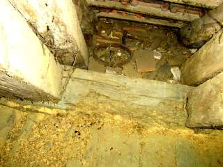
Blick in den verschutteten Dachfußbereich unter dem Aufschiebling - wer hätte gedacht, daß hier nicht nur die Binderschwelle von Hausbock befallen, sondern
umfangreich die Fußzapfen von Aufschiebling, Sparren und Binderstützen vermorscht sind, bis zur Vollvermorschung der hier überhaupt nicht sichtbaren Fußschwelle
und außen anhängenden Traufgesimse.


Ein typischer Hausschwammbefall (Bilder: Matthias Stenger)
1. Ein ungenutzter Kamin, in den es regnet.
2. Im Kamin eine Verstopfung auf Bodenebene des Erdgeschoßes, hier sammelt sich die eingeregnete Feuchte und durchnäßt die angrenzenden Bauteile. Die
Holzbauteile des Fußbodens im Erdgeschoß werden naß, dort siedelt sich aus den überall herumschwirrenden Hausschwammsporen der echte Hausschwamm - Serpula
lacrymans - an. Im Kamin bildet sich sein dickes, polsterfömiges Luftmyzel, saugt die Baufeuchte auf und transportiert sie mittels seiner Strangmyzele in die
benachbarten Holzkonstruktion.
3. Aus dem Fußboden wachsen die Fruchtkörper des echten Hausschwammes hervor. Ein neuer Holzfußboden / Dielenboden!
Frage: Muß nun aus dem Fußboden gemaß Holzschutz-DIN Norm 68800 Teil 4 unheimlich viel weggeschnitten werden, das angrenzende Mauerwerk erst abgeflammt und
dann mit dem restlichen Haus vergiftet werden, und, und, und, oder, oder, oder, oder?
Hier weiter: [19.2]
Das meinen die Anderen (doch Vorsicht vor Kaputtdämmern und Vergiftern!):
Fachwerkliteratur / Bücher über Fachwerkrestaurierung / Fachwerkinstandsetzung / Fachwerkreparatur / Fachwerkbau / Fachwerkhaus / Fachwerkgefüge (hier rezensiert)
Fachliteratur und Angebote Holzschutz
Altbau und Denkmalpflege Informationen Startseite
Fragen???